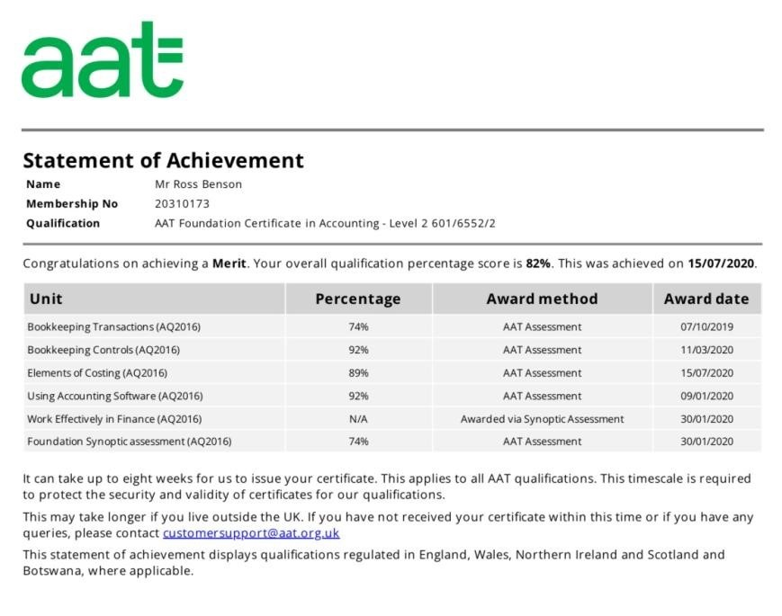
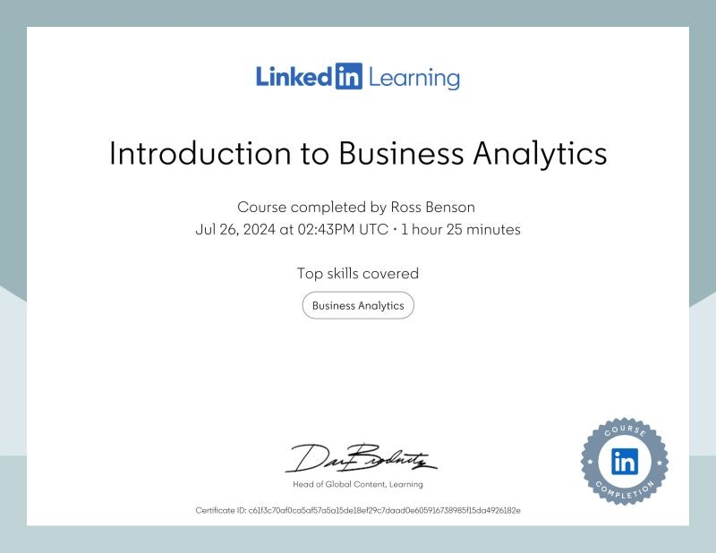

During my time on the course, I have acquired essential skills and knowledge that have prepared me for junior and entry-level accounting roles. I gained a solid foundation in finance administration, delving into areas such as double-entry bookkeeping, basic costing principles, and the use of accounting software. Through the completion of this course, I earned the internationally recognized AAT (Association of Accounting Technicians) Level 2 Foundation Certificate in Accounting.
This qualification not only provided me with theoretical understanding but also practical experience, which is highly valued by employers. The course covered a range of key areas, including Introduction to Bookkeeping, Principles of Bookkeeping, Principles of Costing, and The Business Environment. Additionally, I developed important business communication skills and a commitment to lifelong learning, enabling me to apply what I've learned to the broader industry context.
As I aspire to become a business analyst, these skills and experiences are invaluable. Understanding financial principles and accounting practices allows me to analyze business performance, interpret financial data, and make informed decisions. The course has equipped me with the analytical and practical skills necessary to excel in the business analysis field.
During my time on the course, I learned how to quickly glean insights from data using Power BI, a formidable set of business analytics tools encompassing the Power BI service, Power BI Desktop, and Power BI Mobile. This course, guided by Gini von Courter, equipped me with the skills to effectively create and share impactful visualizations within an organization.
Gini began by covering the web-based Power BI service, where I learned how to import data, create visualizations, and arrange them into comprehensive reports. I discovered how to pin visualizations to dashboards for sharing and how to use Power BI Q&A to ask questions about the data. Additionally, the course provided insights into using Power BI Mobile and the data modeling capabilities in Power BI Desktop.
Through this learning experience, I gained practical knowledge in applying the required hardware to run Power BI successfully, distinguishing between different data types, and understanding the similarities between various visualizations. I learned to identify the outcomes of changes made within Power BI and Power BI Desktop, differentiate between dashboards and reports, determine user roles within a workspace, and manage workspaces and tools within the Power BI mobile application.
These skills are directly related to my goal of becoming a business analyst. Mastering Power BI enables me to analyze business data effectively, create insightful visualizations, and share meaningful reports with stakeholders. The ability to interpret and present data in a visually impactful manner is crucial for a business analyst, and this course has provided me with the essential tools and knowledge to excel in this field.

During my time on the course, I have come to understand the immense value of data and how crucial it is to study and analyze it to create data-informed strategies. Business analytics has shown me how organizations can leverage data to make better, more informed decisions. This course served as a comprehensive introduction, laying the foundations of analytics in an engaging and easy-to-understand manner.
Guided by expert John David Ariansen, I learned why data is so powerful and which insights truly matter. I also gained proficiency in using common analysis tools and techniques. The course covered essential topics such as data source maps, database management, and the various data sources I might encounter. By the end of the course, I developed the skills necessary to start collecting, tracking, and analyzing a variety of data, including sales, marketing, and psychographic metrics.
These skills are directly applicable to my goal of becoming a business analyst. Understanding how to interpret and utilize data effectively will enable me to analyze business performance, uncover trends, and provide actionable insights. The knowledge and experience I gained from this course have equipped me with the analytical capabilities needed to excel in the field of business analysis.
During my time on the course, I delved into the rapidly growing field of business analytics, an area where companies often face a shortage of talent. Guided by Professor Michael McDonald, I learned everything needed to implement business analytics skills and concepts effectively.
Michael began with the basics, explaining the fundamental definitions and uses of business analytics. I learned how to access and integrate the correct data, construct a data map, and get started in business analytics. He demonstrated the use of predictive tools that equip firms to make better decisions, providing significant guidance for management in developing strategies and understanding the market. Additionally, I explored the potential and limitations of generative AI in the context of business analytics.
These skills are directly relevant to my goal of becoming a business analyst. Understanding how to leverage business analytics allows me to access and integrate crucial data, utilize predictive tools for informed decision-making, and provide strategic insights to management. The knowledge gained from this course has equipped me with the essential tools and expertise to excel in the field of business analysis.
Contact Information
- Phone
- +44 7415821677
- rbenson29@outlook.com
© Untitled. Design: HTML5 UP.